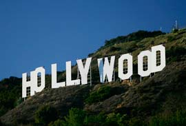
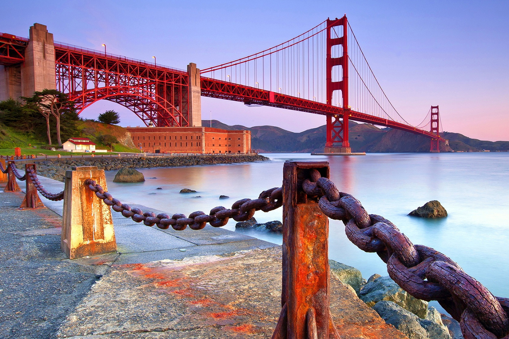
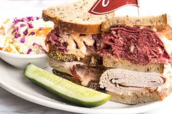
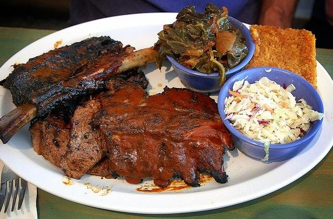

California
Volver al inicio
California es uno de los estados más grandes y más visitados de EUA. Aquí se encuentran ciudades tan emblemáticas como Los Ángeles y San Francisco, parques temáticos tan famosos como Disneyland Anaheim y parques naturales tan míticos como Yosemite y el Gran Cañón del Colorado. En esta lista encontrarás los lugares más interesantes de visitar en California.
Sitios turísticos
LOS ÁNGELES: HOLLYWOOD

Los Ángeles te proponemos ir a visitar el lugar más conocido de la ciudad, Hollywood. Para llegar a Hollywood desde el centro de Los Ángeles deberás coger un metro o un autobús. Nuestra ruta por Hollywood va a empezar por el Teatro Chino Grauman, el cual vale realmente la pena de conocer. Una vez realizada esta visita puedes aprovechar para caminar por el paseo más famoso de Los Ángeles, el Paseo de la Fama, dónde vas a poder ver como las grandes estrellas del cine han dejado sus huellas en el suelo. Terminada la caminata continuaremos nuestro recorrido por Hollywood yendo a visitar el Museo de Historia de Hollywood, donde podrás ver un sinfín de objetos y vestuarios de las películas más influyentes de la historia del cine.
Por la tarde del segundo día de ruta puedes ir a visitar Los Estudios Universales de Hollywood. En los Universal Studios no solo tendrás la oportunidad de visitar los escenarios de las películas más conocidas de esta industria cinematográfica, sino que también podrás disfrutar de sus magníficas atracciones.
Una vez terminada la visita te proponemos ir a comer algo por la zona costera, la zona de Santa Mónica es un buen lugar donde relajarse a las orillas del mar. Por la noche puedes aprovechar para salir de fiesta por Los Ángeles.
Puente Golden Gate

El tráfico por la Bahía de San Francisco era tan intenso a mediados de la década de 1920, que los ferris no eran suficientes para atender la demanda. Fue así como en 1928 se decidió la construcción del Golden Gate, una de las mayores obras de ingeniería de la época e icono de la ciudad de San Francisco y Estados Unidos.
La Gran Depresión se desencadenó en 1929 y los bonos emitidos para financiar el proyecto no consiguieron compradores, hasta que en 1932 el Bank of América compró el saldo de la suscripción, que no había hallado colocación.
La construcción comenzó en 1933 y 4 años más tarde, específicamente el 27 de mayo, miles automovilistas californianos lo cruzaron por primera vez.
El Golden Gates es de tipo colgante y fue pionero en el uso de redes de seguridad, que salvaron a 19 trabajadores que habían caído al vacío en incidentes. Sin embargo, 11 obreros murieron durante la construcción, de los cuales 10 perecieron cuando la red cedió durante un accidente.
El puente tiene una longitud total de 2 mil 737 metros, de ellos, 1970 corresponden a la estructura colgante. Por sus 6 carriles de circulan diariamente más de 100 mil coches. El puente es el único medio para salir de San Francisco por el norte.
Chinatown, San Francisco

El barrio chino de San Francisco es el más importante del mundo y una de las principales atracciones turísticas de la ciudad. Acoge la mayor comunidad china fuera de Asia y es el más grande de Norteamérica.
Se encuentra en el centro de San Francisco en un espacio de 1.6 km de largo y 2.1 km de ancho, entre la Calle Montgomery, la Avenida Columbus, el distrito financiero y la Calle Unión y North Beach.
Tiene 2 grandes vías, la Avenida Grant y la Calle Stockton. La primera de estas es la más frecuentada por los turistas con su Puerta del Dragón, uno de los sitios más fotografiados del barrio.
La calle Stockton tiene menor afluencia. Su ambiente con restaurantes típicos, mercados de pescado y tiendas tradicionales, es más auténticamente chino.
En el laberinto de callejuelas del Chinatown se consiguen los artículos exóticos asociados a esa milenaria cultura, incluyendo los herbolarios de la antigua medicina tradicional china y los restaurantes de comida cantonesa dim sum.
En la Plaza Portsmouth es habitual ver a personas haciendo tai chi y jugando ajedrez chino. Hay una réplica de la Diosa de la Democracia y la Libertad, estatua erigida por estudiantes de Tiananmén en 1989 y destruida por el ejército chino que reprimió brutalmente las protestas.
Venice Skatepark

Venice es hoy una de las áreas más vibrantes y eclécticas de Los Ángeles. Es un área inusualmente peatonal para la ciudad; muchas de sus casas tienen sus entradas principales en las calles peatonales, las que están numeradas. La entrada del automóvil está por el lado de los callejones en la parte posterior. Sin embargo, al igual que el resto de Los Ángeles, Venice es también conocido por su congestión del tráfico. Está situado a 2 millas de la autopista sin peaje más cercana, y su red inusualmente densa de estrechas calles no fue planeada para las demandas del tráfico moderno.
Restaurantes
Eleven City Deli

Delicatessen, Fuente de soda, Sopas, Estadounidense
Wendys
Wendy's es una empresa multinacional de restaurantes de comida rápida con sede en Dublin, Ohio (Estados Unidos). Su menú está compuesto por hamburguesas, sándwiches y batidos.
Baby Blues BBQ

Comida Estadounidense, Parrillada y Opciones sin gluten
Historia de California
California es uno de los cincuenta estados de Estados Unidos de América. Su capital es Sacramento, y su ciudad más poblada, Los Ángeles. Está ubicado en la región oeste del país, división Pacífico, limitando al norte con Oregón, al este con Nevada, al sureste con el río Colorado que lo separa de Arizona, al sur con Baja California (México) y al oeste con el océano Pacífico. Con 37 253 956 habitantes en 2010 es el estado más poblado y con 423 970 km², el tercero más extenso, por detrás de Alaska y Texas. Fue admitido en la Unión el 9 de septiembre de 1850 como el estado número 31.
Además, cuenta con las segunda y quinta áreas más pobladas de la nación, el Gran Los Ángeles y el Área de la Bahía de San Francisco y ocho de las ciudades más pobladas del país: Los Ángeles, San Diego, San José, San Francisco, Fresno, Sacramento, Long Beach y Oakland.
¿Con quien te gustaría ir?
Me encantaría ir sola.
Ruta recomendada para viajar en California
- DÍA 1: DOWNTOWN, CHINATOWN Y LITTLE TOKYO
En tu primer día de itinerario por Los Ángeles te recomendamos ir a visitar el centro de Los Ángeles: el Downtown (también conocido como Centro Cívico de Los Ángeles). Visitar el centro de la ciudad es la mejor forma de ubicarte, sobretodo si es la primera vez que pones los pies en ella. Proponemos que empieces la mañana visitando el Ayuntamiento de Los Ángeles, una obra arquitectónica de relevante importancia para la ciudad y conocida mundialmente por ser uno de los lugares más filmados de Hollywood.
- DÍA 2: HOLLYWOOD Y SANTA MÓNICA
En el segundo día de recorrido por Los Ángeles te proponemos ir a visitar el lugar más conocido de la ciudad, Hollywood. Recomendamos que cojas un metro o un autobús para llegar hasta el paseo de la fama, ya que en esta inmensa ciudad las distancias a pie pueden convertirse en un camino de peregrinaje. Una vez estés en Hollywood te recomendamos empezar la ruta por uno de los edificios más espectaculares: El Teatro Chino Grauman.
- DÍA 3: BEVERLY HILLS, SUNSET STRIP Y VENICE
El itinerario por Los Ángeles no estaría completo sin visitar el conocido barrio de Beverly Hills. Si tienes ganas de ir a visitar mansiones y casas de famosos lo mejor es coger uno de los itinerarios organizados que recorren Hollywood y Beverly Hills. Se trata de unos autobuses con guía que irán mostrando las espectaculares casas de las estrellas. Si este tipo de tours no son lo tuyo, simplemente puedes aprovechar para pasear por este barrio, que es realmente bonito y especial. Una vez terminado el paseo, la ruta se dirige a otro lugar emblemático de Los Ángeles: Sunset Strip. Ésta calle es un buen lugar para hacer las últimas compras en la ciudad.